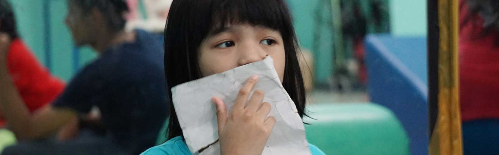
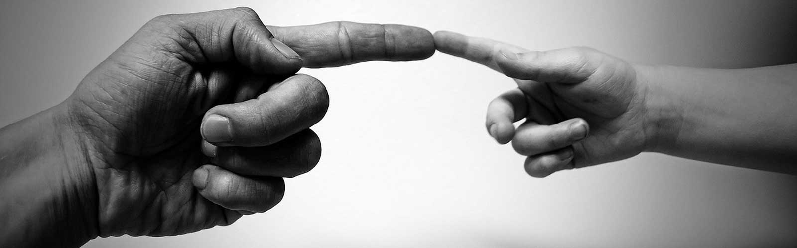

Yayasan Heesu "Cahaya Cinta" didirikan pada tanggal 11 November 2008 oleh seorang berkebangsaan Korea Selatan bernama Poong Nam Choi dan diresmikan oleh Departemen Sosial Republik Indonesia pada tanggal 14 Maret 2009.
Anak-anak di Yayasan Heesu memiliki kebutuhan khusus untuk menunjang aktivitas dan kondisi kesehatan mereka, seperti fisioterapi, terapi wicara, okupasi terapi, mereka juga harus selalu didampingi dokter anak, dokter neurologi, dokter ortopedi, dokter rehabilitasi medik, terapis, ahli gizi, psikolog, guru pendidikan luar biasa dan tenaga medis lainnya.
Saat awal berdiri, tim rehabilitasi Yayasan Heesu hanya memiliki seorang fisioterapis, perawat dan dokter umum Novi, fisioterapis pertama di Yayasan Heesu merangkap sebagai okupasi terapis dan juga terapi wicara demi memperbaiki kemampuan makan, gerak/aktivitas dan bicara anak.
Di Heesu, semua tenaga ahli sampai pengasuh diarahkan untuk bisa menghidupkan suasana kekeluargaan dan kepedulian antar sesama sehingga semua pekerjaan tidak dirasa membebani karena dilakukan dengan hati. Dapat dikatakan bahwa Yayasan Heesu berdiri dari sekelompok professional dan relawan yang peduli pada anak-anak penyandang disabilitas ganda.
Kami sangat bersyukur, bukan hanya para karyawan yang peduli, namun juga banyak orang yang datang memberikan dukungan dengan melakukan kegiatan bakti sosial, donasi, atau pun sekedar berkunjung untuk menghibur anak-anak. Mulai dari individu, perusahaan, komunitas, maupun organisasi baik domestik atau pun asing.